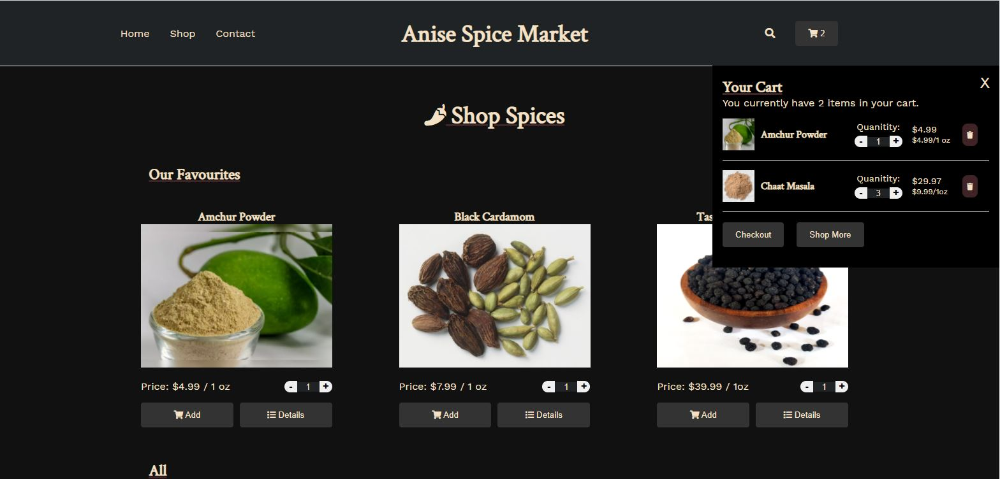

Today was focused on state management and organization of the the shopping cart for the e-commerce website.
I knew there would be a few challenging parts of this project, and the shopping cart seemed to me like an obvious aspect that would take effort to figure out a good organization structure to pass added items in the cart between components. This took a bit of refactoring my navbar and removing the routing switch to be central to the App.js component. I also added hooks for storing the state of the cart to this app component so it could be passed between various pages via the navbar (which contains a dropdown display cart items). Over this took some time to think through and figure out how to pass hooks down as props and vice-versa, but the results seem promising.
Here is a screenshot of the Anise Spice Market's store page with a drop-down shopping cart:
